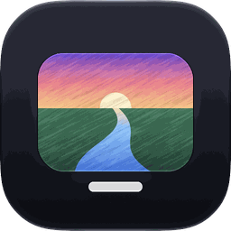

Canal — Confidentialité
App pour iPhone et iPad · mise à jour le 30/10/2026
Canal se connecte au serveur IPTV que TU indiques. Tes identifiants restent dans le trousseau de ton appareil.
En bref
- Aucune publicité, aucun compte à créer, aucun traçage publicitaire.
- Aucune statistique d'utilisation et aucun rapport de plantage automatique ne sont envoyés par cette version.
- Rien n'est vendu ni partagé avec qui que ce soit.
- Tes données restent sur ton appareil, sauf ce qui est listé dans « Connexions ».
Ce que l'app garde sur ton appareil
- Ton compte IPTV (adresse du serveur, identifiant, mot de passe) et ta clé TMDB facultative : rangés dans le trousseau de l'appareil, envoyés uniquement à ton serveur IPTV et à TMDB.
- Ta bibliothèque (reprise, Ma liste, favoris, préférences de langue) : enregistrée sur l'appareil.
- Synchronisation facultative entre tes appareils (reprise, vus, listes) : chiffrée de bout en bout sur ton appareil avant l’envoi au serveur de synchro de Traffik (Cloudflare). Le serveur ne voit qu’un identifiant opaque et des données illisibles ; aucune adresse IP n’est conservée. Désactivable dans Réglages.
Connexions
- Ton serveur IPTV ou ta liste M3U (celui que tu as saisi).
- TMDB, TVmaze et iTunes : affiches, résumés et notes des films et séries (seuls les titres cherchés sont envoyés).
- Synchronisation entre ton Mac, ton iPhone et ton iPad (désactivable dans les réglages) : un serveur de Rayane ne reçoit qu'un identifiant opaque et un paquet chiffré de bout en bout, illisible sans ton abonnement.
Autorisations demandées
- Appareil photo : seulement pour scanner le QR code affiché par Canal sur ton Mac.
- Réseau local : pour un serveur IPTV chez toi et pour AirPlay.
Chaque autorisation est demandée au moment où elle sert ; tu peux la retirer à tout moment dans Réglages › Confidentialité et sécurité.
TestFlight et Apple
Cette app est distribuée par TestFlight, le service de test d'Apple. Si tu envoies un commentaire ou une capture depuis TestFlight, Apple les transmet à Rayane avec ton adresse e-mail TestFlight ; Apple peut aussi lui transmettre les rapports de plantage que tu acceptes de partager. Voir la politique de confidentialité d'Apple pour TestFlight.
Supprimer tes données
Supprime l'app : tout ce qu'elle a enregistré sur l'appareil disparaît avec elle. Les clés que tu as saisies peuvent aussi être effacées depuis ses réglages.
Contact
Une question ou une demande ? Contacte Rayane directement.